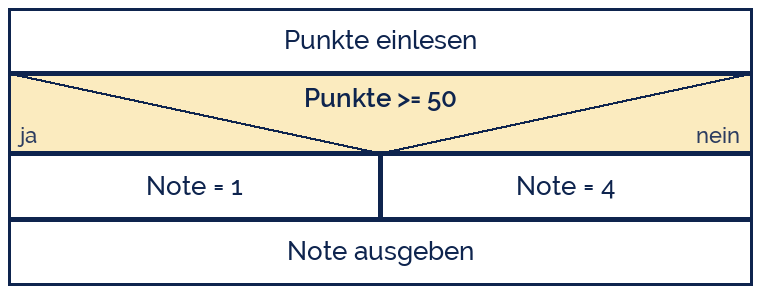
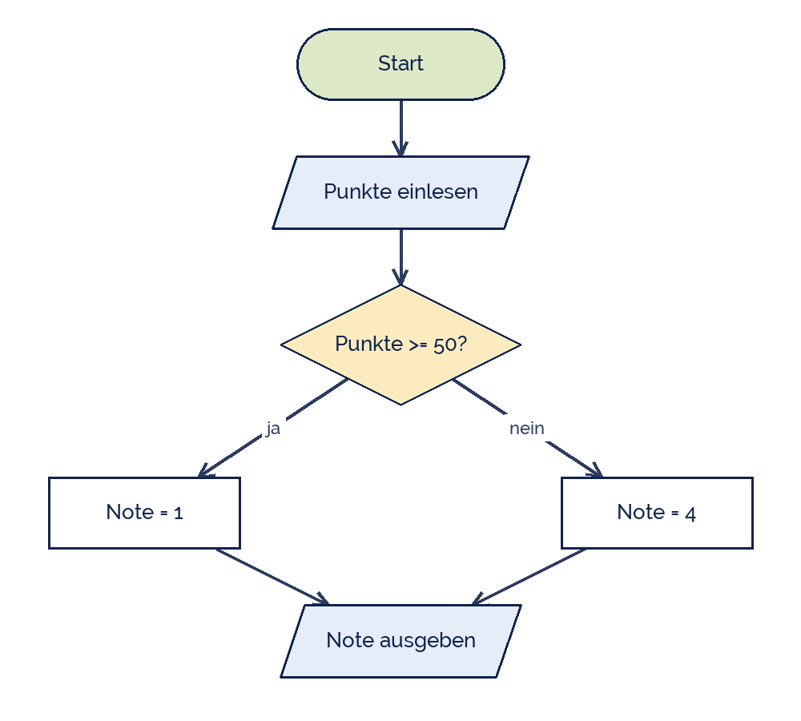

sasint
sasint
Good morning!
Nur das Schöne wird die Welt retten!
Fjodor Dostojewski
Nicht verzagen, Doc Alvers fragen!
Informatik — Grundkurs 12
Erst zeichnen, dann programmieren
Struktogramm und Programmablaufplan — die drei Grundstrukturen
Nicht verzagen, Doc Alvers fragen!
Kapitel 01
Drei Grundstrukturen
Mehr braucht kein Algorithmus
Nicht verzagen, Doc Alvers fragen!
Folge, Auswahl, Wiederholung
| Struktur | heißt | Beispiel |
|---|---|---|
| Folge | Anweisungen nacheinander | einlesen, rechnen, ausgeben |
| Auswahl | eine von mehreren Möglichkeiten | if, elif, else |
| Wiederholung | ein Block läuft mehrfach | for, while |
Böhm und Jacopini bewiesen 1966: diese drei genügen für jeden Algorithmus
Deshalb kommt der Sprungbefehl in strukturierten Sprachen nicht mehr vor
Nicht verzagen, Doc Alvers fragen!
Auswahl im Struktogramm
Der Kasten mit Dreieck ist die Auswahl: links ja, rechts nein
Ein Struktogramm hat einen Eingang oben und einen Ausgang unten
Deshalb sind Sprünge darin nicht darstellbar — das ist Absicht
Aus einem Struktogramm entsteht automatisch strukturierter Code

Nicht verzagen, Doc Alvers fragen!
Kapitel 02
PAP
Dieselbe Sache mit anderen Symbolen
Nicht verzagen, Doc Alvers fragen!
Die Symbole nach DIN 66001
| Symbol | bedeutet |
|---|---|
| Rechteck mit runden Enden | Anfang und Ende |
| Parallelogramm | Ein- oder Ausgabe |
| Rechteck | Operation, Zuweisung |
| Raute | Verzweigung mit zwei beschrifteten Ausgängen |
| Pfeil | Ablaufrichtung |
Der PAP erlaubt Pfeile in jede Richtung — auch zurück nach oben für Schleifen
Genau darin liegt sein Vorteil und seine Gefahr: Sprünge sind möglich
Nicht verzagen, Doc Alvers fragen!
Dasselbe als Programmablaufplan
Die Raute hat genau zwei beschriftete Ausgänge
Beide Zweige führen wieder zusammen — sonst hat der Plan zwei Enden
Für Schleifen zeigt ein Pfeil zurück nach oben

Nicht verzagen, Doc Alvers fragen!
Kapitel 03
Lesen und prüfen
Woran man einen guten Entwurf erkennt
Nicht verzagen, Doc Alvers fragen!
Die Prüffragen
Hat der Plan genau einen Anfang und genau ein Ende?
Ist jede Verzweigung beschriftet — und führen die Zweige wieder zusammen?
Endet jede Schleife? Was ändert sich im Rumpf, damit sie endet?
Sind die Anweisungen eindeutig — oder steht dort „ein bisschen erhöhen“?
Und: lässt sich der Plan von Hand durchspielen? Das ist der Schreibtischtest
Nicht verzagen, Doc Alvers fragen!
Was man nicht zeichnen kann, kann man auch nicht programmieren. Und ein Struktogramm ohne Ende ist keins.
Merksatz
Nicht verzagen, Doc Alvers fragen!
Fun Facts: Visualisierung
Das Struktogramm heißt nach seinen Erfindern Nassi-Shneiderman-Diagramm (1972)
Es entstand ausdrücklich, um Sprünge unmöglich zu machen
Der PAP ist nach DIN 66001 genormt — die Norm stammt von 1966
Dijkstra schrieb 1968 „Go To Statement Considered Harmful“ — der Anfang vom Ende des Sprungs
In Jahrgangsstufe 13 setzt ihr diese Entwürfe in Programmcode um
Nicht verzagen, Doc Alvers fragen!
Eure Aufgabe
Zeichnet zu drei Aufgaben vom Arbeitsblatt je ein Struktogramm
Übertragt eines davon in einen PAP
Prüft jeden Entwurf mit den fünf Prüffragen
Spielt einen Entwurf mit einer Wertetabelle durch
Tauscht mit dem Nachbarn: lässt sich sein Entwurf ohne Rückfrage lesen?
Nicht verzagen, Doc Alvers fragen!